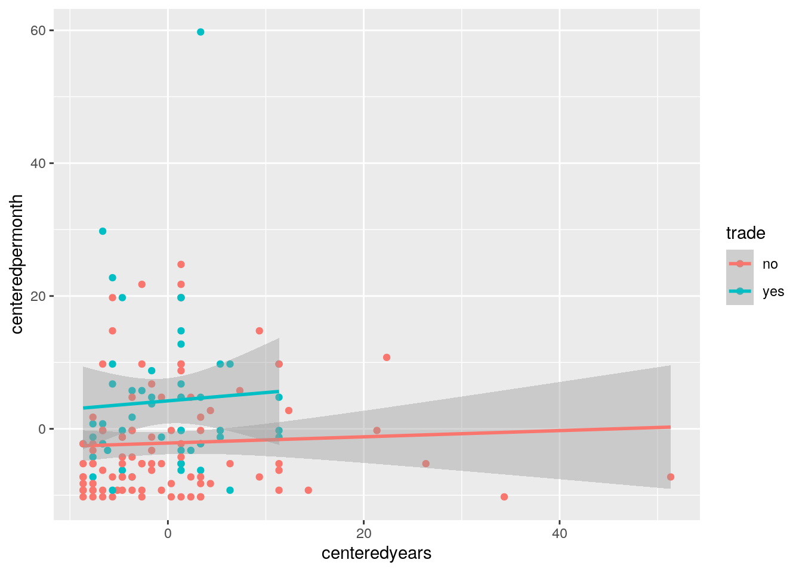

library(readxl)
library(tidyverse)## ── Attaching packages ─────────────────────────────────────────────────────── tidyverse 1.3.0 ──## ✓ ggplot2 3.3.2 ✓ purrr 0.3.4
## ✓ tibble 3.0.3 ✓ dplyr 1.0.1
## ✓ tidyr 1.1.1 ✓ stringr 1.4.0
## ✓ readr 1.3.1 ✓ forcats 0.5.0## ── Conflicts ────────────────────────────────────────────────────────── tidyverse_conflicts() ──
## x dplyr::filter() masks stats::filter()
## x dplyr::lag() masks stats::lag()#loading in dataset
SportsCards <- read_csv("SportsCards.csv")## Warning: Missing column names filled in: 'X1' [1]## Parsed with column specification:
## cols(
## X1 = col_double(),
## good = col_character(),
## dealer = col_character(),
## permonth = col_double(),
## years = col_double(),
## income = col_character(),
## gender = col_character(),
## education = col_character(),
## age = col_double(),
## trade = col_character()
## )#Turn gender into a binary variable
SportsCards <- SportsCards %>% mutate(y = ifelse(gender=="male", 1, 0))library(dplyr)
library(rstatix)##
## Attaching package: 'rstatix'## The following object is masked from 'package:stats':
##
## filterman1 <- manova(cbind(years, permonth)~trade, data=SportsCards)
summary(man1)## Df Pillai approx F num Df den Df Pr(>F)
## trade 1 0.089285 7.1078 2 145 0.001136 **
## Residuals 146
## ---
## Signif. codes: 0 '***' 0.001 '**' 0.01 '*' 0.05 '.' 0.1 ' ' 1summary.aov(man1)## Response years :
## Df Sum Sq Mean Sq F value Pr(>F)
## trade 1 7 7.043 0.1012 0.7508
## Residuals 146 10159 69.581
##
## Response permonth :
## Df Sum Sq Mean Sq F value Pr(>F)
## trade 1 1317.3 1317.30 14.057 0.000255 ***
## Residuals 146 13681.9 93.71
## ---
## Signif. codes: 0 '***' 0.001 '**' 0.01 '*' 0.05 '.' 0.1 ' ' 1SportsCards%>%group_by(trade)%>%summarize(mean(years),mean(permonth))## `summarise()` ungrouping output (override with `.groups` argument)## # A tibble: 2 x 3
## trade `mean(years)` `mean(permonth)`
## <chr> <dbl> <dbl>
## 1 no 8.81 8.11
## 2 yes 8.35 14.4pairwise.t.test(SportsCards$permonth, SportsCards$trade, p.adj = "none")##
## Pairwise comparisons using t tests with pooled SD
##
## data: SportsCards$permonth and SportsCards$trade
##
## no
## yes 0.00025
##
## P value adjustment method: none#Finding probability of Type I Error
1-(0.95)^5## [1] 0.2262191#Bonferroni correction
(0.05/5)## [1] 0.01group <- SportsCards$trade
DVs <- SportsCards %>% select(years, permonth)
#Test multivariate normality for each group (null: assumption met)
sapply(split(DVs,group), mshapiro_test)## no yes
## statistic 0.7471121 0.8017925
## p.value 1.068704e-11 9.644208e-07#Box's M test (null: homogeneity of vcov mats assumption met)
box_m(DVs, group)## # A tibble: 1 x 4
## statistic p.value parameter method
## <dbl> <dbl> <dbl> <chr>
## 1 24.6 0.0000184 3 Box's M-test for Homogeneity of Covariance Matr…#Covariance matrices for each group
lapply(split(DVs,group), cov)## $no
## years permonth
## years 89.502656 4.191511
## permonth 4.191511 69.956343
##
## $yes
## years permonth
## years 30.145408 3.758163
## permonth 3.758163 140.738367ggplot(SportsCards, aes(x = years, y = permonth)) + geom_point(alpha = .5) + geom_density_2d(h=2) + coord_fixed() + facet_wrap(~trade)SportsCards %>% group_by(dealer) %>% summarize(means = mean(permonth)) %>% summarize(diff(means))## `summarise()` ungrouping output (override with `.groups` argument)## # A tibble: 1 x 1
## `diff(means)`
## <dbl>
## 1 9.16random_distribution <- vector()
for (i in 1:5000) {
randomnew <- data.frame(permonth = sample(SportsCards$permonth), dealer = SportsCards$dealer)
random_distribution[i] <- mean(randomnew[randomnew$dealer == "yes", ]$permonth) - mean(randomnew[randomnew$dealer == "no", ]$permonth)
}
mean(random_distribution > 9.162162 | random_distribution < -9.162162)## [1] 0t.test(data = SportsCards, permonth ~ dealer)##
## Welch Two Sample t-test
##
## data: permonth by dealer
## t = -6.1748, df = 117.42, p-value = 9.796e-09
## alternative hypothesis: true difference in means is not equal to 0
## 95 percent confidence interval:
## -12.100628 -6.223696
## sample estimates:
## mean in group no mean in group yes
## 5.662162 14.824324{
hist(random_distribution, main = "Histogram"); abline(v = c(-9.162162, 9.162162), col="purple")
}#load in libraries to try to fix knitting issues
library(lmtest)## Loading required package: zoo##
## Attaching package: 'zoo'## The following objects are masked from 'package:base':
##
## as.Date, as.Date.numericlibrary(tidyverse)
library(sandwich)
library(cluster)
set.seed(348)
#Centering around the mean in two numeric variables and conduct linear regression
SportsCards$centeredyears <- (SportsCards$years - mean(SportsCards$years, na.rm = TRUE))
SportsCards$centeredpermonth <- (SportsCards$permonth - mean(SportsCards$permonth, na.rm = TRUE))
reg <- lm(centeredyears ~ centeredpermonth * trade, data = SportsCards)
summary(reg)##
## Call:
## lm(formula = centeredyears ~ centeredpermonth * trade, data = SportsCards)
##
## Residuals:
## Min 1Q Median 3Q Max
## -8.804 -5.542 -1.519 2.718 51.495
##
## Coefficients:
## Estimate Std. Error t value Pr(>|t|)
## (Intercept) 0.28350 0.87457 0.324 0.746
## centeredpermonth 0.05992 0.10182 0.588 0.557
## tradeyes -0.70044 1.53288 -0.457 0.648
## centeredpermonth:tradeyes -0.03321 0.14341 -0.232 0.817
##
## Residual standard error: 8.387 on 144 degrees of freedom
## Multiple R-squared: 0.003573, Adjusted R-squared: -0.01719
## F-statistic: 0.1721 on 3 and 144 DF, p-value: 0.9151ggplot(SportsCards, aes(x = centeredyears, y = centeredpermonth, group = trade)) + geom_point(aes(color=trade)) + geom_smooth(method = "lm", aes(color = trade))## `geom_smooth()` using formula 'y ~ x'
#Check assumptions
ggplot() + geom_point(aes(reg$fitted.values, reg$residuals)) + geom_hline(yintercept = 0, color = 'purple')bptest(reg)##
## studentized Breusch-Pagan test
##
## data: reg
## BP = 3.1497, df = 3, p-value = 0.3691ks.test(reg$residuals, "pnorm", mean = 0, sd(reg$residuals))## Warning in ks.test(reg$residuals, "pnorm", mean = 0, sd(reg$residuals)): ties
## should not be present for the Kolmogorov-Smirnov test##
## One-sample Kolmogorov-Smirnov test
##
## data: reg$residuals
## D = 0.14911, p-value = 0.002772
## alternative hypothesis: two-sidedcoeftest(reg, vcov = vcovHC(reg))##
## t test of coefficients:
##
## Estimate Std. Error t value Pr(>|t|)
## (Intercept) 0.283500 0.910726 0.3113 0.7560
## centeredpermonth 0.059916 0.097070 0.6172 0.5380
## tradeyes -0.700438 1.245460 -0.5624 0.5747
## centeredpermonth:tradeyes -0.033213 0.114292 -0.2906 0.7718summary(reg)##
## Call:
## lm(formula = centeredyears ~ centeredpermonth * trade, data = SportsCards)
##
## Residuals:
## Min 1Q Median 3Q Max
## -8.804 -5.542 -1.519 2.718 51.495
##
## Coefficients:
## Estimate Std. Error t value Pr(>|t|)
## (Intercept) 0.28350 0.87457 0.324 0.746
## centeredpermonth 0.05992 0.10182 0.588 0.557
## tradeyes -0.70044 1.53288 -0.457 0.648
## centeredpermonth:tradeyes -0.03321 0.14341 -0.232 0.817
##
## Residual standard error: 8.387 on 144 degrees of freedom
## Multiple R-squared: 0.003573, Adjusted R-squared: -0.01719
## F-statistic: 0.1721 on 3 and 144 DF, p-value: 0.9151set.seed(348)
reg <- lm(centeredyears ~ centeredpermonth * trade, data = SportsCards)
summary(reg)##
## Call:
## lm(formula = centeredyears ~ centeredpermonth * trade, data = SportsCards)
##
## Residuals:
## Min 1Q Median 3Q Max
## -8.804 -5.542 -1.519 2.718 51.495
##
## Coefficients:
## Estimate Std. Error t value Pr(>|t|)
## (Intercept) 0.28350 0.87457 0.324 0.746
## centeredpermonth 0.05992 0.10182 0.588 0.557
## tradeyes -0.70044 1.53288 -0.457 0.648
## centeredpermonth:tradeyes -0.03321 0.14341 -0.232 0.817
##
## Residual standard error: 8.387 on 144 degrees of freedom
## Multiple R-squared: 0.003573, Adjusted R-squared: -0.01719
## F-statistic: 0.1721 on 3 and 144 DF, p-value: 0.9151residuals <- reg$residuals
fittedvals <- reg$fitted.values
residual_replicate <- replicate(5000, {
newresiduals<-sample(residuals,replace=T)
SportsCards$new_yvar<- fittedvals + newresiduals
reg2 <- lm(new_yvar ~ centeredyears * trade, data=SportsCards)
coef(reg2)
})
residual_replicate %>% t %>% as.data.frame %>% summarize_all(sd)## (Intercept) centeredyears tradeyes centeredyears:tradeyes
## 1 0.8377157 0.08708512 1.435687 0.2298385logreg <- glm(y ~ years + permonth, data = SportsCards, family = binomial(link = "logit"))
coeftest(logreg)##
## z test of coefficients:
##
## Estimate Std. Error z value Pr(>|z|)
## (Intercept) 1.409565 0.470185 2.9979 0.002719 **
## years 0.098738 0.057747 1.7099 0.087293 .
## permonth 0.010886 0.031491 0.3457 0.729588
## ---
## Signif. codes: 0 '***' 0.001 '**' 0.01 '*' 0.05 '.' 0.1 ' ' 1exp(coef(logreg))## (Intercept) years permonth
## 4.094173 1.103778 1.010945SportsCards <- SportsCards %>% mutate(prob = predict(logreg, type="response"), prediction=ifelse(prob>.5,1,0))
classify <- SportsCards %>% transmute(prob, prediction, truth = y)
table(prediction = classify$prediction, truth=classify$truth) %>% addmargins()## truth
## prediction 0 1 Sum
## 1 15 133 148
## Sum 15 133 148probability = predict(reg, type = "response")
class_diagnostic <- function(probs, truth) {
tab <- table(factor(probs > 0.5, levels = c("FALSE", "TRUE")), truth)
acc = sum(diag(tab))/sum(tab)
sens = tab[2, 2]/colSums(tab)[2]
spec = tab[1, 1]/colSums(tab)[1]
ppv = tab[2, 2]/rowSums(tab)[2]
if (is.numeric(truth) == FALSE & is.logical(truth) == FALSE)
truth <- as.numeric(truth) - 1
ord <- order(probs, decreasing = TRUE)
probs <- probs[ord]
truth <- truth[ord]
TPR = cumsum(truth)/max(1, sum(truth))
FPR = cumsum(!truth)/max(1, sum(!truth))
dup <- c(probs[-1] >= probs[-length(probs)], FALSE)
TPR <- c(0, TPR[!dup], 1)
FPR <- c(0, FPR[!dup], 1)
n <- length(TPR)
auc <- sum(((TPR[-1] + TPR[-n])/2) * (FPR[-1] - FPR[-n]))
data.frame(acc, sens, spec, ppv, auc)
}
class_diagnostic(probability, SportsCards$y)## acc sens spec ppv auc
## 1 0.2297297 0.1503759 0.9333333 0.952381 0.4385965SportsCards$logit<-predict(logreg,type="link")
SportsCards$yfactor <- as.factor(SportsCards$y)
SportsCards %>% group_by(yfactor) %>% ggplot() + geom_density(aes(logit,color=yfactor,fill=yfactor))library(plotROC)
ROCplot <- ggplot(SportsCards) + geom_roc(aes(d = y, m = prob), n.cuts = 0)
ROCplotcalc_auc(ROCplot)## PANEL group AUC
## 1 1 -1 0.6488722logreg2 <- glm(y ~ good+dealer+trade+years+permonth, data = SportsCards, family = binomial(link = "logit"))
summary(logreg2)##
## Call:
## glm(formula = y ~ good + dealer + trade + years + permonth, family = binomial(link = "logit"),
## data = SportsCards)
##
## Deviance Residuals:
## Min 1Q Median 3Q Max
## -2.5217 0.2822 0.3995 0.5210 0.7786
##
## Coefficients:
## Estimate Std. Error z value Pr(>|z|)
## (Intercept) 1.101839 0.516072 2.135 0.0328 *
## goodB 0.504387 0.566641 0.890 0.3734
## dealeryes 0.359446 0.690941 0.520 0.6029
## tradeyes 0.700850 0.715039 0.980 0.3270
## years 0.084256 0.059489 1.416 0.1567
## permonth -0.007949 0.034273 -0.232 0.8166
## ---
## Signif. codes: 0 '***' 0.001 '**' 0.01 '*' 0.05 '.' 0.1 ' ' 1
##
## (Dispersion parameter for binomial family taken to be 1)
##
## Null deviance: 97.100 on 147 degrees of freedom
## Residual deviance: 90.391 on 142 degrees of freedom
## AIC: 102.39
##
## Number of Fisher Scoring iterations: 6exp(coef(logreg2))## (Intercept) goodB dealeryes tradeyes years permonth
## 3.009695 1.655970 1.432535 2.015466 1.087908 0.992082prob2 <- predict(logreg2, data = "response")
class_diagnostic(prob2, SportsCards$y)## acc sens spec ppv auc
## 1 0.8986486 1 0 0.8986486 0.6937343set.seed(1234)
k = 10
data <- SportsCards[sample(nrow(SportsCards)), ]
folds <- cut(seq(1:nrow(SportsCards)), breaks = k, labels = FALSE)
diags <- NULL
for (i in 1:k) {
train <- data[folds != i, ]
test <- data[folds == i, ]
truth2 <- test$y
logreg3 <- glm(y ~ good + dealer + trade + years + permonth, data = train,
family = "binomial")
logreg3$xlevels[["dealer"]] <- union(logreg3$xlevels[["dealer"]], levels(train$dealer))
logreg3$xlevels[["trade"]] <- union(logreg3$xlevels[["trade"]], levels(train$trade))
logreg3$xlevels[["years"]] <- union(logreg3$xlevels[["years"]], levels(train$years))
logreg3$xlevels[["permonth"]] <- union(logreg3$xlevels[["permonth"]], levels(train$permonth))
prob3 <- predict(logreg3, newdata = test, type = "response")
diagnostics <- rbind(diags, class_diagnostic(prob3, truth2))
}
summarize_all(diagnostics, mean)## acc sens spec ppv auc
## 1 0.8666667 1 0 0.8666667 0.4615385library(glmnet)## Loading required package: Matrix##
## Attaching package: 'Matrix'## The following objects are masked from 'package:tidyr':
##
## expand, pack, unpack## Loaded glmnet 4.0-2set.seed(1234)
y <- as.matrix(SportsCards$y)
predictions <- model.matrix(y ~ good + dealer + trade + years + permonth, data = SportsCards)[, -1]
head(predictions)## goodB dealeryes tradeyes years permonth
## 1 1 1 1 12 70
## 2 1 1 1 2 40
## 3 1 1 0 10 35
## 4 0 1 1 3 33
## 5 0 1 0 10 32
## 6 0 1 1 10 30cv <- cv.glmnet(predictions, y, family = "binomial")
lasso_fit <- glmnet(predictions, y, family = "binomial", lambda = cv$lambda.1se)
coef(lasso_fit)## 6 x 1 sparse Matrix of class "dgCMatrix"
## s0
## (Intercept) 2.182299
## goodB 0.000000
## dealeryes .
## tradeyes .
## years .
## permonth .set.seed(1234)
k = 10
data <- SportsCards[sample(nrow(SportsCards)), ]
folds <- cut(seq(1:nrow(SportsCards)), breaks = k, labels = FALSE)
diags <- NULL
for (i in 1:k) {
train2 <- data[folds != i, ]
test2 <- data[folds == i, ]
truth2 <- test2$y
logreg4 <- glm(y ~ permonth, data = train2,
family = "binomial")
prob4 <- predict(logreg4, newdata = test2, type = "response")
diagnostics2 <- rbind(diags, class_diagnostic(prob4, truth2))
}
summarize_all(diagnostics2, mean)## acc sens spec ppv auc
## 1 0.8666667 1 0 0.8666667 0.6153846